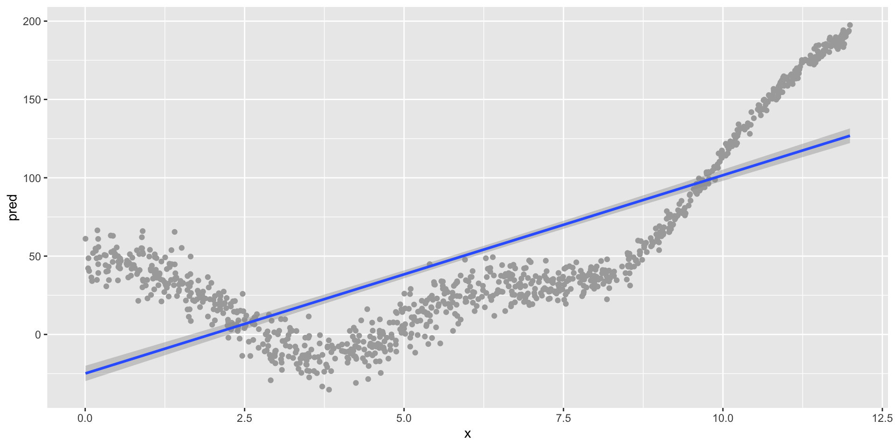
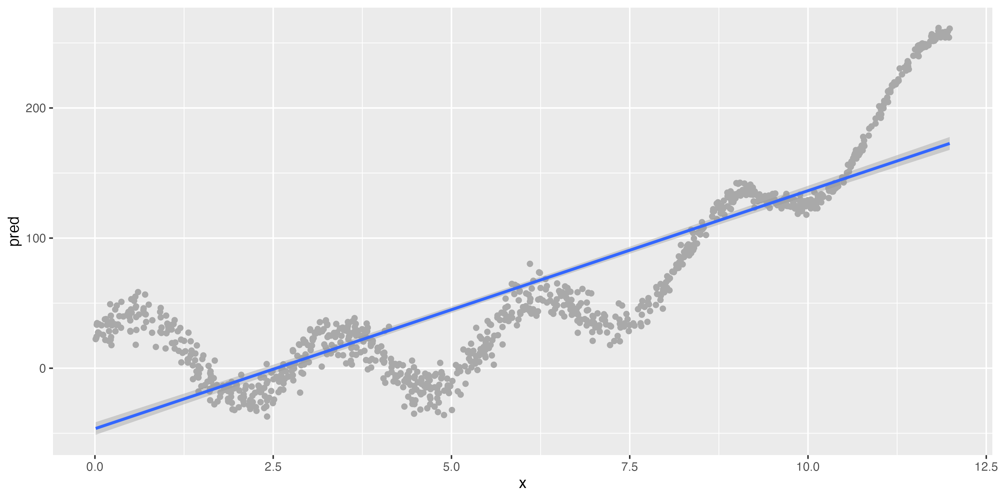

Using Training and Testing Data in a Workflow
Conceptual Overview
Purpose and Agenda
Building on the foundations from Module 1, this session delves deeper into the workflows we will use when we are using a SML approach. Particularly, we’ll explore the roles of training and testing data and when to use them in a SML workflow. Continuing with the IPEDS data we explored in Module 1, we’ll build on our predictions of institutional graduation rates.
What we’ll do in this presentation
- Discussion 1
- Key Concept #1: Our SML framework
- Key Concept #2: Training and testing data
- Key Concept #3: Bias-variance trade-off
- Discussion 2
- Introduction to the other parts of this module
Discussion 1
Discuss!
- Provide an example of supervised machine learning in the context of educational research. Discuss why this counts as machine learning.
- How might presenting the results of a machine learning model differ from presenting those from a more traditional (“explanatory”) model?
Key Concept #1: Our SML framework
Overview
- We want to make predictions about an outcome of interest based on predictor (or independent) variable(s) that we think are related to the outcome (or dependent variable).
- We’ll continue using IPEDS, the Integrated Postsecondary Education Data System data to predict institutional graduation rates.
LASER Frame (reminder)
- Prepare: Prior to analysis, we’ll take a look at the context from which our data came, formulate some questions, and load R packages.
- Wrangle: In the wrangling section, we will learn some basic techniques for manipulating, cleaning, transforming, and merging data.
- Explore: The processes of wrangling and exploring data often go hand in hand.
- Model: In this step, we carry out the analysis - here, supervised machine learning.
- Communicate: Interpreting and communicating the results of our findings is the last step.
SML Frame (mostly new!)
- Split data (Prepare)
- Engineer features and write down the recipe (Wrangle and Explore)
- Specify the model and workflow (Model)
- Fit model (Model)
- Evaluate accuracy (Communicate)
This is the fundamental process we’ll follow for this and the next two modules focused on supervised ML
Key Concept #2: Training and testing data
Train vs. test data
- Train data: Coded/outcome data that you use to train (“estimate”) your model
- Validation data1: Data you use to select a particular algorithm
- Test (“hold-out”) data: Data that you do not use in any way to train your data
[1] not always/often used, for reasons we’ll discuss later
Algorithms (reminder)
- Algorithms (or estimation procedures - or models) refer to the structure and process of estimating the parameters of a model
- This definition provides a wide range of options for what kinds of algorithms we use (from simple to very complex, as we discuss in a later module)
- For now, we focus on a familiar, easy to interpret algorithm (e.g., 1, also this), logistic regression
- This is a linear model with a binary (“yes” or “no”) outcome
- It will be a basic model to start us off!
Predictions (reminder)
- When doing supervised ML, we focus on predicting an outcome: how well we do this overall and for particular cases (more on how in the next module)
- We do not focus on inference or explanation (i.e., an “explanatory” model): model fit, statistical significance, effect sizes, etc.
- This is a really key difference – we use different metrics to evaluate what makes for a good model
Train vs. test
- A key concept in the context of supervised machine learning is training vs. testing data:
- Training data: Data we use to fit (or train, AKA estimate) a supervised machine learning model (AKA algorithm)
- Testing data: Data we use to see how well our model performs on data not used to fit the model
- By splitting our data into training and testing sets, we can obtain unbiased metrics for how good our model is at predicting
How does this avoid bias?
- If we used only one data set (i.e., only training data) we could fit a model that does a really good job of making predictions
- But, this model would likely be overfit — a model that is too tailored to the specific data in our training set, rather than a model that can be more generalizable
- The big picture, very real risk of not using training and testing data is we think we have a better model than we do
- We could fit a model that perfectly predicts every outcome in our training data, but when the model sees new (i.e., different) data, it performs very poorly
- This is essential for supervised machine learning; if you review or see a study that only uses a single data set, be skeptical of the prediction metrics!
Strata
- It is often valuable to conduct a stratified split, based on the proportion or distribution of the dependent variables’ values in the dataset
- this ensures our training and testing data will not have a misbalance in the dependent variable
Key concept #3 - Bias - Variance
What’s stopping me from specifying a complex model?
- Nothing too much, apart from computing power, time, and concerns of
- A “check” on your work is your predictions on test set data (but, more on this later)
- An important way to achieve good performance with test data is to balance between the inherent bias in your algorithm and the variance in the predictions of your algorithm; this is referred to as the bias-variance trade-off of all models
Illustrating the bias-variance tradeoff
A strongly biased algorithm (linear model)
A much less-biased algorithm (GAM/spline)
Slightly different data (bottom)
Still strong bias, but low variance

Low bias, but very high variance
The bias-variance tradeoff
Bias
- Definition: Difference between our known codes/outcomes and our predicted codes/outcomes; difference between \(y\) and \(\hat{y}\)
- How (in)correct our models’ (algorithms’) predictions are
- Models with high bias can fail to capture important relationships—they can be under-fit to our data
- In short, how well our model reflects the patterns in the data
Variance
- Definition: Using a different sample of data, the difference in \(\hat{y}\) values
- How sensitive our predictions are to the specific sample on which we trained the model
- Models with high variance can fail to predict different data well
- In short, how stable the predictions of our model are
Discussion 2
- Why not use our training data to evaluate how good our model is?
- What data or context are you interested in for your use of SML?
Introduction to the other parts of this module
Breiman, L. (2001). Statistical modeling: The two cultures (with comments and a rejoinder by the author). Statistical science, 16(3), 199-231.
Estrellado, R. A., Freer, E. A., Mostipak, J., Rosenberg, J. M., & Velásquez, I. C. (2020). Data science in education using R. Routledge (c14), Predicting students’ final grades using machine learning methods with online course data. http://www.datascienceineducation.com/
- Building a prediction model for institutional graduation rates based on IPEDS data
- Work with peers to complete this, reading the text, following links to resources (and the reading), and then completing the required üëâ Your Turn ‚§µ tasks
- A key is available, but we strongly encourage you to use it only at the end to check your work, or if you are completely stuck and have tried our recommended troubleshooting steps: https://docs.google.com/document/d/14Jc-KG3m5k1BvyKWqw7KmDD21IugU5nV5edfJkZyspY/edit
- Involves applying what you have done through this point in the module to a) extending our model and b) reflecting and planning, after which you will knit and submit your work by publishing to Posit Cloud.
fin
General troubleshooting tips for R and RStudio